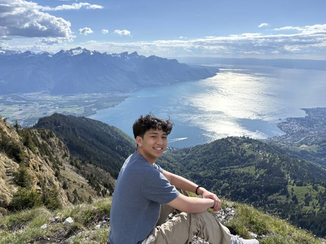
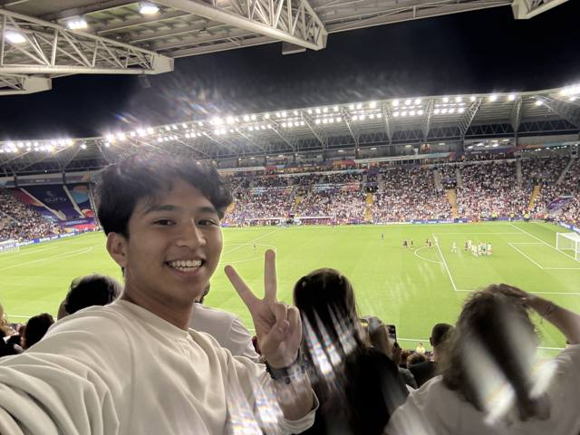
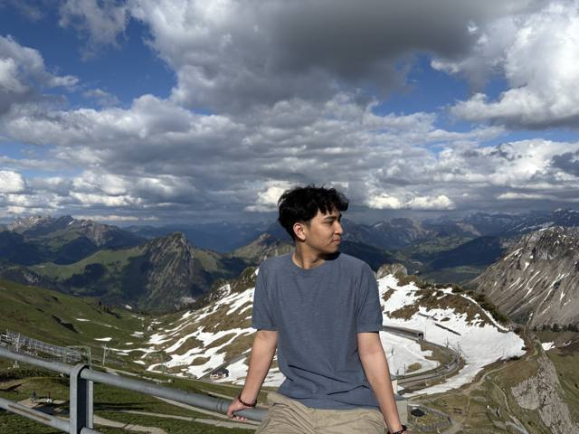
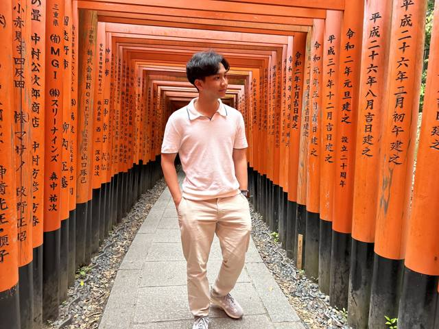
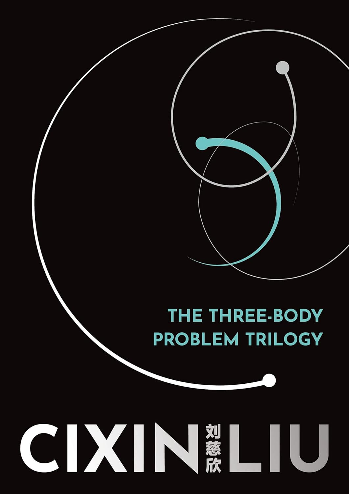
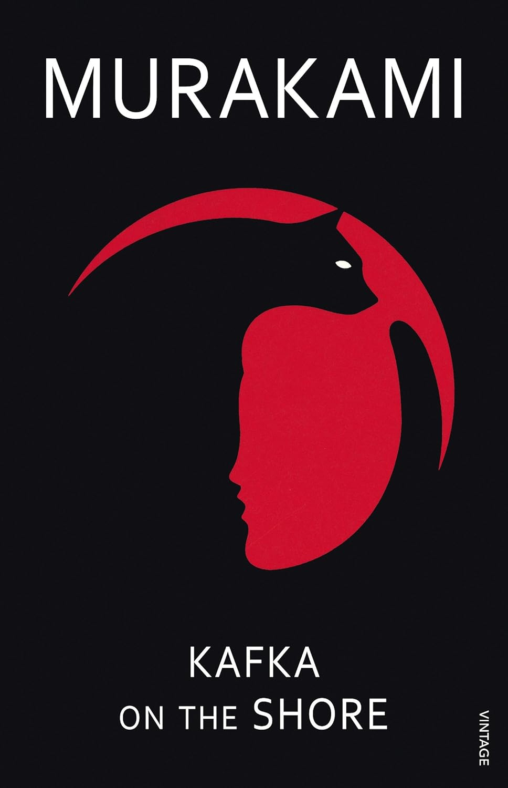
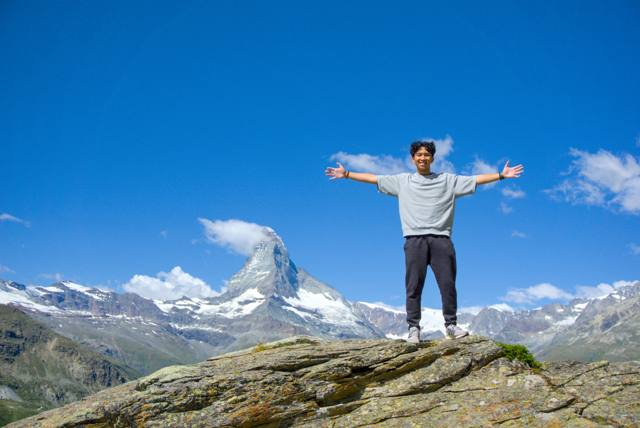
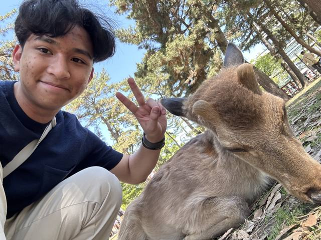
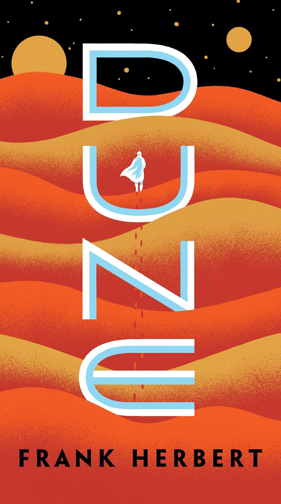
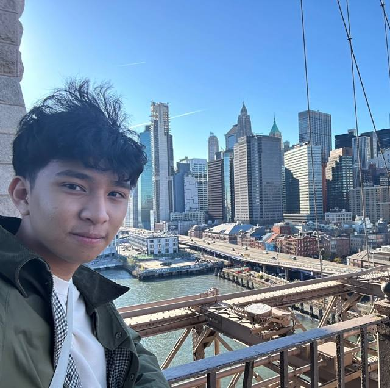

I like experiencing things I know nothing about.
Shared by all three: same header as Work (amber "real neurons" banner instead of the green net), the motto as the statement, and the same footer self-portrait. The three options differ only in how the four blocks are arranged: facts, photos, books, other interests.
A · Field notebook. Four labelled sections, top to bottom, the same rhythm as Work (readings → list → gallery). Most scannable and the easiest to keep updated; the personality comes from the copy, not the layout. My recommendation.
…and many, many more, omitted to keep this website minimalist.
Items marked 📷 get a small photo on hover. List from docs/planning/CONTENT.md; the karate medals and piano level live in the readings above instead of here.
Needs from you: these are the photos already in the repo, and most of them are of you. You said "photos I took that I'm proud of", so send the ones you actually want (scenery, people, details), with a place for each. I'll resize them properly (the current set is 61 MB; the page should load ~3–5 MB).
Including the U.S. Open ISKA World Championships.
Played both with my band at graduation.
Mostly travel; the gallery is the proof.
one line from you
an image would make this card
Zelda, Persona 5, Professor Layton, Steins;Gate, The Three-Body Problem.
B · Atlas. A world map is the centrepiece: every country is a pin, hovering one shows its best photo. Facts become a strip of polaroids you swipe through. Books and interests share a compact row at the end. Strongest "data person" signal; depends on the countries list and one photo per country.

Pins are guesses from your photos. Need the real country list. A counter beside it reads "N countries · M photos", from the data.

Did full-time research at Stanford and NUS at the same time, 15 hours apart.
01 · SUMMER 2024Got kicked out of an all-you-can-eat buffet.
02Solved [X] Jane Street puzzles.
03Met Pope Francis (cardboard cutout).
04
Ate a pizza bun 3 km up in the Swiss Alps.
13Accidentally hiked the hardest trail up Seoul's tallest mountain with my mom.
10C · The desk. One big scene: a walnut desk with things scattered on it (polaroids, sticky-note facts, books, medals, a strip of piano keys, a fan of student IDs). Hover lifts an object, click opens it. It mirrors the scattered plaques on Work. The most memorable and the most fun; the risk is that it reads as a toy, and it must collapse to a plain list (A) on phones.

Fushimi Inari, Kyoto?


Swiss Alps
Nara

New YorkOn click, each object opens a small card (the full fact, the photo large with its place, or the book with your one-liner). Below the desk: a plain "everything on the desk" list, for skimmers and screen readers.